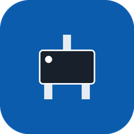

Офлайн-справочник синонимов корпусов для Android
sc88a найдёт SC-88A, 0603 — и 0603, и 1608.APK подписан собственным ключом автора, не через Google Play, поэтому Play Защита может показать предупреждение о неизвестном разработчике.
Откройте «Веб-версию» в Chrome на Android и выберите в меню «Добавить на главный экран». После первого открытия она работает офлайн.
«≈» — близкий, но не идентичный корпус. Пустая ячейка — обозначение не найдено или корпус не выпускается. Часть кодов внесена без первоисточника — перед применением сверяйте посадочное место с чертежом в даташите.